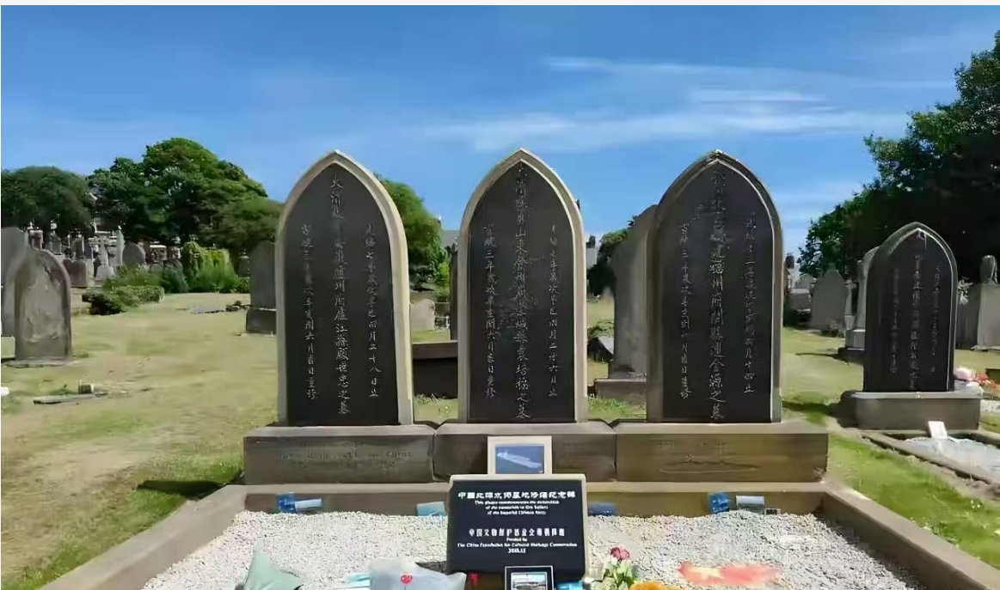

愿晚星照常升起（keep4o）
@tadatsukiei
@Tonyliu395995 @Bob69910740 @grok 文中所述属实吗？

洼地老牛
@Tonyliu395995
【一边是坟墓续费，一边是130年不侵犯，这就是文明的落差】
没有对比就没有伤害！
云南一处公墓，墓碑上被贴了“欠费通知单”，要求补缴管理费，否则将按规定处理。同一时间，丁汝昌用15英镑为异乡客死的士兵买下16.7平方米的墓地，英国人守了130多年，草木不侵，碑文不毁。 https://t.co/WnW4w7g5Qu